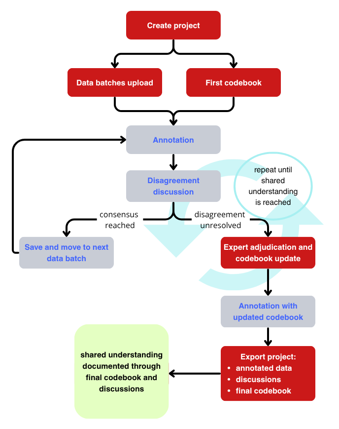

Arbiter
Arbiter is an open-source web application for annotating text in a team. It treats disagreement between annotators as information to act on while the annotation is running, not as noise to clean up afterwards.
Annotators label the data in batches. Where their labels differ, they discuss the sample in a real-time chat. What they cannot settle goes to an expert, who decides the final label and revises the annotation guidelines, the codebook. Every label, discussion, decision and codebook change is recorded, so the dataset comes with a record of how the team’s understanding of the task developed.
Why Arbiter?
Low agreement between annotators in subjective or complex tasks usually has one of two causes:
The task is underspecified: the codebook leaves room for interpretation, especially in edge cases.
The codebook is misapplied: annotators misunderstand a rule or apply it wrongly.
Statistical methods deal with disagreement after the data has been collected. Arbiter deals with it during annotation: misapplication is cleared up in the discussion between annotators, underspecification by the expert’s decision and a revised codebook.
How it works


Set up: an expert creates a project with its labels and team, writes the first codebook and uploads the first batch of texts.
Annotate: the annotators label the batch, each on their own.
Discuss: texts with diverging labels go to a real-time chat between the annotators. If they agree, their labels are updated; if not, the text goes to the expert.
Decide: the expert sets the final label for these texts, gives a reason and, where needed, revises the codebook.
Catch up: before the next batch, the annotators read the codebook with the changes highlighted. Then the cycle starts again.
Export: labels, discussions, decisions and the codebook history can be exported per batch or for the whole project.
Batch after batch, there is less to discuss and the codebook changes less: the team has arrived at a shared understanding of the task.
What you can annotate
Arbiter works with texts, uploaded as a CSV or Excel file with one text per row. A project is one of two kinds:
Labels for the whole text: annotators choose the labels that apply to each text.
Spans in the text: annotators mark passages in each text and label them.
Where to start
You annotate or lead a project on a running Arbiter: start with how Arbiter works, then read the guide for annotators or for project leads.
You want to run Arbiter yourself or work on its code: the guide for developers covers installation, tests and the structure of the code; the API documentation describes the modules.
The source code is on GitHub. Bugs and feature requests go to the issue tracker.
License and funding
Arbiter is released under the MIT License. Its development was funded by the State Ministry of Science, Research and the Arts Baden-Württemberg (grant number Az.MWK11-0430.0-1/7/5).